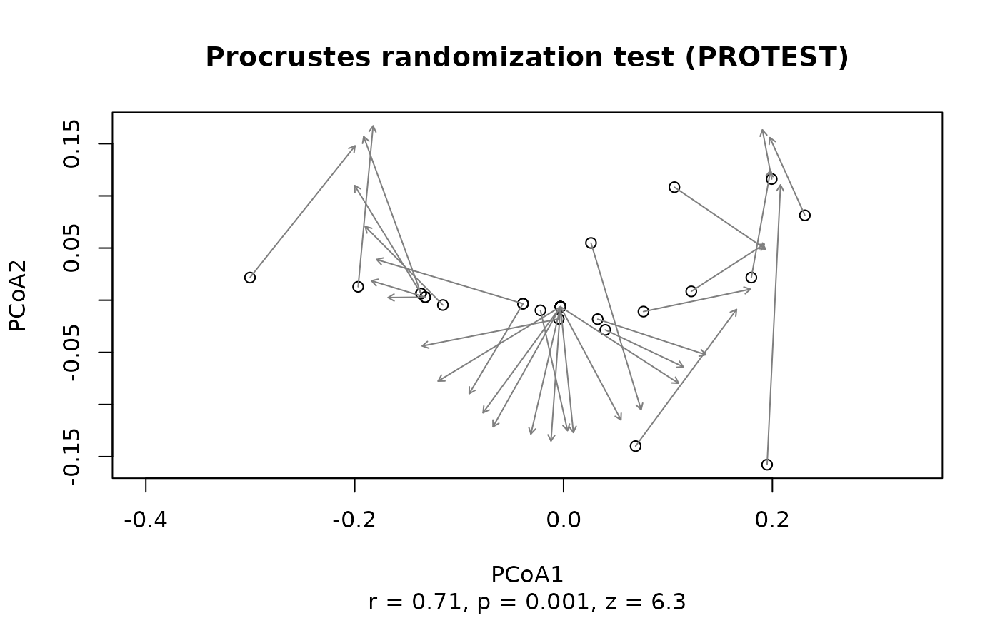
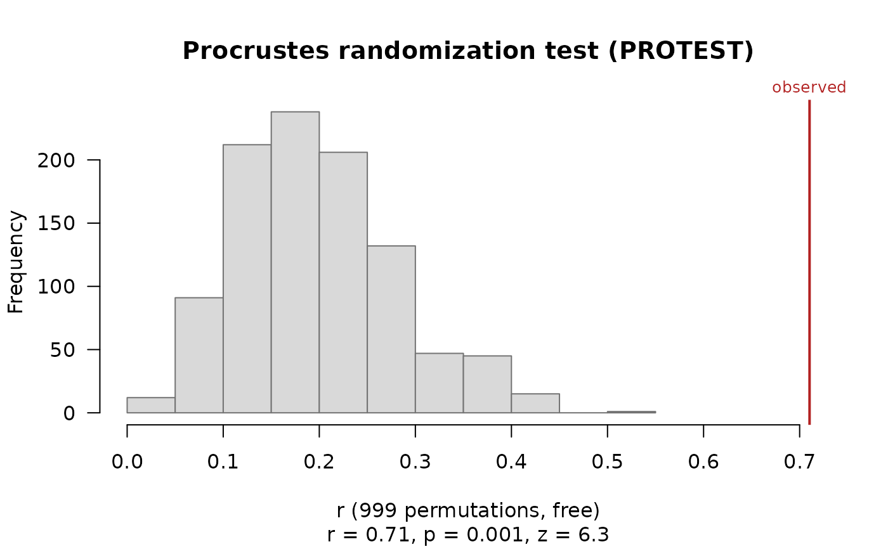

Tests whether two ordinations of the same samples agree better than
chance: PROTEST (Jackson 1995; Peres-Neto & Jackson 2001). The statistic
is the symmetric Procrustes correlation, \(r = \sqrt{1 - m^2}\), from
procrustes() with symmetric = TRUE, and its p-value comes from
permutations of ord's samples. Gives the same statistic as
vegan::protest(), and the same p-values for the same permutations,
computed in parallel C.
Usage
procrustes_test(
ord,
target,
axes = NULL,
n_axes = 3L,
permutations = 999L,
strata = NULL,
seed = 0L,
cpus = n_cpus()
)Arguments
- ord
The ordination to rotate onto
target: a numeric matrix (or data frame) with one row per sample and one column per axis, such as frompcoa(),nmds(),pca(), orumap(); or adistobject, such as frombeta_div(), which is first ordinated withpcoa().- target
The ordination that
ordis fitted to, in any of the formsordtakes. When bothordandtargethave sample (row) names,target's rows are matched toord's by name; otherwise they must be in the same order.- axes
Which axes (columns) of
ordandtargetto use: whole numbers, as inenvfit(). When one of the two has fewer columns than asked for, it is padded with columns of zeros, as invegan::procrustes(). Default:NULL, the firstmin(ncol(ord), ncol(target))axes.- n_axes
When
ordortargetis adistobject, the number of PCoA axes to compute from it, as inpcoa(). Ignored otherwise. Default:3.- permutations
The number of permutations. Default:
999. Alternatively, a matrix with one permutation of1:nper row, as frompermute::shuffleSet(), to use instead of random ones.- strata
Permute samples only within these groups (blocks), for designs such as repeated measures: a vector with one value per sample, matched to
ord's samples by name when it has names, otherwise in the same order. Default:NULL(free permutation).- seed
An integer seed for the random permutations. The same seed gives the same p-values. Default:
0- cpus
How many parallel processing threads should be used. The default,
n_cpus(), is the CPU cores this R process may use, within any limits set on it. Results are the same for anycpus.
Value
A list of class c('ecodive_procrustes_test', 'ecodive_test'),
with:
statistic: The symmetric Procrustes correlation,c(r = ...): \(\sqrt{1 - m^2}\).vegan::protest()'st0.p_value: The permutation p-value: the proportion of permutations, counting the observed one, with \(r\) at least as large.z: The standardized effect size,(r - mean(r_perm)) / sd(r_perm).n_perm: The number of permutations.ss: The symmetric Procrustes sum of squares, \(m^2\).vegan::protest()'sss.n: The number of samples.n_axes: The number of axes compared (after any zero-padding).procrustes: The fit:procrustes()'s result, withsymmetric = TRUE.permutation: How samples were permuted:'free','within strata', or'supplied matrix'.
Attribute r_perm is a vector of the statistics of the permutations, as
vegan::protest()'s t. as.data.frame() gives the main results as
one row.
Details
Method
Both configurations are centred and scaled to unit sum of squares. The
rows of ord are then permuted, and the symmetric Procrustes correlation
recomputed: the sum of the singular values of the \(k \times k\)
cross-product of the two. The p-value is
\((1 + \#\{r_{perm} \ge r\}) / (1 + permutations)\), where, as in
vegan, permuted statistics within sqrt(.Machine$double.eps) of the
observed one count as ties.
The test is the same whichever of ord and target is permuted, and,
because the statistic is symmetric, whichever is rotated.
Speed and reproducibility
Each permutation is one pass over the samples, \(O(n k^2)\), and a
\(k \times k\) singular value decomposition; permutations run in
parallel. They come from seed, not from R's random number generator, so
p-values are identical from run to run and for any number of cpus, and
agree with vegan::protest()'s exactly when the same permutations
matrix is given to both.
Differences from vegan::protest()
The name:
procrustes_test(), notprotest(), so that it sorts besideprocrustes().The argument order, as for
procrustes():procrustes_test(ord, target)isvegan::protest(target, ord). The statistic and p-value are the same either way round.The default
axes, as forprocrustes().
References
Jackson, D. A. (1995). PROTEST: a PROcrustean Randomization TEST of community environment concordance. Ecoscience, 2(3), 297-303. doi:10.1080/11956860.1995.11682297
Peres-Neto, P. R., & Jackson, D. A. (2001). How well do multivariate data sets match? The advantages of a Procrustean superimposition approach over the Mantel test. Oecologia, 129(2), 169-178. doi:10.1007/s004420100720
Examples
# 30 samples along a gradient that favours some genera at one end
# and others at the other.
set.seed(1)
grad <- seq(-2, 2, length.out = 30)
counts <- sapply(1:20, function (j) rpois(30, 5 * exp(grad * (j - 10.5) / 5)))
rownames(counts) <- paste0('S', 1:30)
bc <- pcoa(bray(counts), n_axes = 2)
jc <- pcoa(jaccard(counts), n_axes = 2)
# Do the Bray-Curtis and Jaccard PCoAs agree?
res <- procrustes_test(jc, bc)
res
#> Procrustes randomization test (PROTEST)
#>
#> r = 0.7103, p = 0.001, z = 6.3
#> Permutations: 999 (free)
#>
#> Symmetric Procrustes sum of squares (m^2): 0.4955
#> Samples: 30, axes: 2
plot(res)

plot(res, type = 'null')
